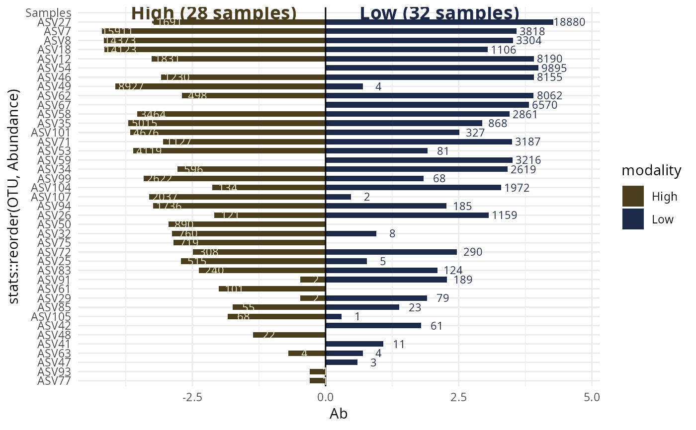

Graphical representation of distribution of taxa across two samples.
Usage
biplot_pq(
physeq,
fact = NULL,
merge_sample_by = NULL,
rarefy_after_merging = FALSE,
inverse_side = FALSE,
left_name = NULL,
left_name_col = "#4B3E1E",
left_fill = "#4B3E1E",
left_col = "#f3f2d9",
right_name = NULL,
right_name_col = "#1d2949",
right_fill = "#1d2949",
right_col = "#1d2949",
log10trans = TRUE,
nudge_y = c(0.3, 0.3),
geom_label = FALSE,
text_size = 3,
size_names = 5,
y_names = NA,
ylim_modif = c(1, 1),
nb_samples_info = TRUE,
plotly_version = FALSE,
...
)Arguments
- physeq
(required): a
phyloseq-classobject obtained using thephyloseqpackage.- fact
(default: NULL) Name of the factor in
physeq@sam_data. If left to NULL use theleft_nameandright_nameparameter as modality.- merge_sample_by
(default: NULL) if not
NULLsamples of physeq are merged using the vector set bymerge_sample_by. This merging used themerge_samples2(). In the case ofbiplot_pq()this must be a factor with two levels only.- rarefy_after_merging
Rarefy each sample after merging by the modalities merge_sample_by
- inverse_side
Inverse the side (put the right modality in the left side).
- left_name
Name fo the left sample.
- left_name_col
Color for the left name
- left_fill
Fill fo the left sample.
- left_col
Color fo the left sample.
- right_name
Name fo the right sample.
- right_name_col
Color for the right name
- right_fill
Fill fo the right sample.
- right_col
Color fo the right sample.
- log10trans
(logical) Does abundancy is log10 transformed ?
- nudge_y
A parameter to control the y position of abundancy values. If a vector of two values are set. The first value is for the left side. and the second value for the right one. If one value is set, this value is used for both side.
- geom_label
(default: FALSE, logical) if TRUE use the
ggplot2::geom_label()function instead ofggplot2::geom_text()to indicate the numbers of sequences.- text_size
size for the number of sequences
- size_names
size for the names of the 2 samples
- y_names
y position for the names of the 2 samples. If NA (default), computed using the maximum abundances values.
- ylim_modif
vector of two values. Modificator (by a multiplication) of ylim. If one value is set, this value is used for both limits.
- nb_samples_info
(default: TRUE, logical) if TRUE and merge_sample_by is set, add the number of samples merged for both levels.
- plotly_version
If TRUE, use
plotly::ggplotly()to return a interactive ggplot.- ...
Other arguments for the ggplot function
Examples
data_fungi_2Height <- subset_samples(data_fungi_mini, Height %in% c("Low", "High"))
biplot_pq(data_fungi_2Height, "Height", merge_sample_by = "Height")
#> Cleaning suppress 5 taxa and 0 samples.
#> Scale for y is already present.
#> Adding another scale for y, which will replace the existing scale.
#> Warning: Removed 1 row containing missing values or values outside the scale range
#> (`geom_rect()`).
